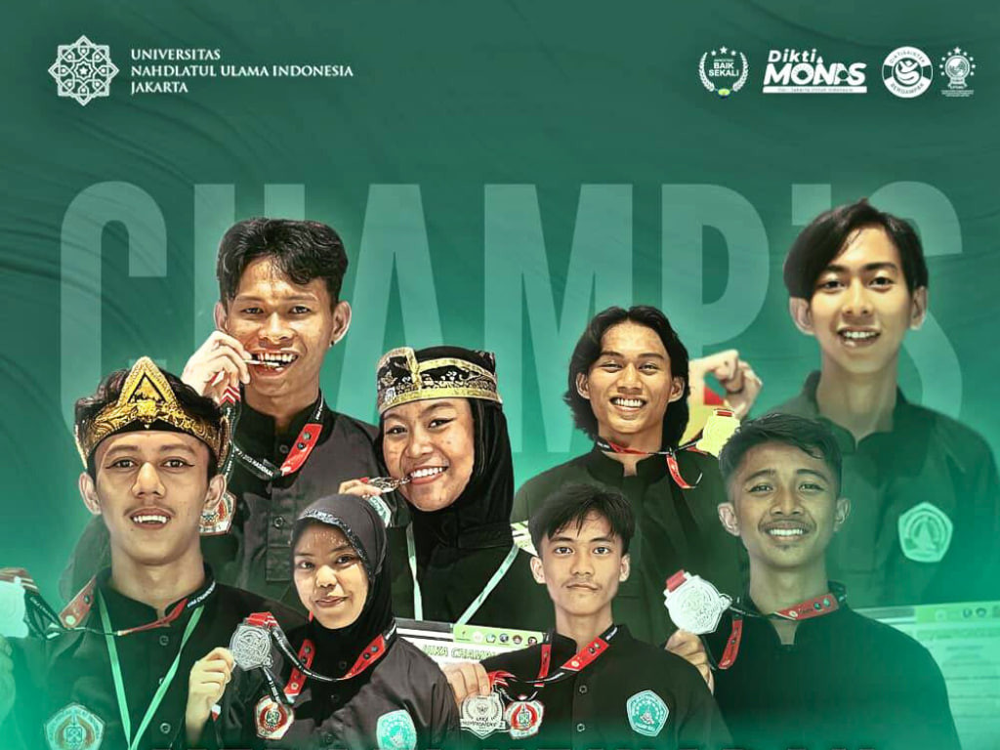

Selamat Datang di PAGARNUSA UNUSIA
Mengembangkan potensi diri, menguatkan spiritualitas, dan menjunjung tinggi nilai-nilai tradisi.
Pencak Silat Nahdlatul Ulama Pagar Nusa Rayon Universitas Nahdlatul Ulama Indonesia (UNUSIA) adalah wadah bagi mahasiswa untuk berkreasi, berprestasi, dan melestarikan budaya bangsa.
📢 Ujian Kenaikan Tingkat IV
PSNU PAGARNUSA UNUSIA
Assalamu’alaikum warahmatullahi wabarakatuh.
**Tema:** Mengukir Bakti, Memuliakan Marwah Kolektif Santri PSNU PAGARNUSA
📅 Linimasa Kegiatan
- **Pendaftaran dibuka:** 16 Desember 2025
- **Pendaftaran ditutup:** 31 Desember 2025
- **Pelaksanaan Ujian:** 10–11 Januari 2026
📍 Lokasi Pelaksanaan
Gelanggang Olahraga Kampus UNUSIA
🔗 Link Pendaftaran
Klik di sini untuk mendaftar Ujian📞 Contact Person
Silakan hubungi: **0857-1523-2441**
Diharapkan seluruh santri yang memenuhi syarat dapat segera mendaftar dan mempersiapkan diri dengan sebaik-baiknya.
Atas perhatian dan partisipasinya kami ucapkan terima kasih.
Wassalamu’alaikum warahmatullahi wabarakatuh.
Hormat kami,
Panitia Pelaksana PSNU PAGARNUSA UNUSIA
🏆 Prestasi Membanggakan

Mahasiswa Universitas Nahdlatul Ulama Indonesia (Unusia) kembali menorehkan prestasi membanggakan pada ajang **UIKA Championship 2 2025 Tingkat Nasional** yang digelar pada **5–7 Desember 2025** di GOR Gymnasium SV IPB.
Kontingen Unusia tampil gemilang dengan meraih **delapan gelar juara** dari kategori tanding dan seni.
🥇 Peraih Prestasi
- M. Nizam Hasbi F Juara 1 Tanding Kelas A (SPI)
- Ramlan Juara 1 Tanding Kelas C (SPI)
- Dinda Ayuni Juara 2 Seni Tunggal Dewasa (SPI)
- Dede Ahmad F. Juara 2 Tanding Prestasi Kelas Under A (Teknik Informatika)
- Dwi-Nur Aini Juara 2 Tanding Kelas A (PAI)
- Hoirul Sambudi Juara 2 Seni Tunggal Dewasa (Pendidikan Bahasa Inggris)
- M. Ibnu Mundzir Juara 2 Seni Tunggal Baku Dewasa Prestasi (Teknologi Agroindustri)
- Khairun Anwar Juara 3 Tanding Prestasi Kelas A (SPI)
🎙️ Pesan dari Pelatih
Pendampingan oleh **Misbahul Muniruddin** (Alumni Unusia PAI 2025)
"Bukan hanya medali yang membuat saya bangga, tapi melihat mereka bertanding dengan baik dan aman. Itu sudah membuat saya sangat bersyukur. Teruslah berlatih dan jangan mudah menyerah. Kesuksesan itu hasil dari proses panjang, jadi tetap fokus dan percaya bahwa usaha tidak akan mengkhianati hasil.”
Prestasi kontingen Unusia di UIKA Championship 2 2025 diharapkan dapat menjadi pemantik semangat bagi mahasiswa untuk terus berkiprah dan membawa nama baik kampus di berbagai ajang kompetisi lainnya.
Kembali ke atas